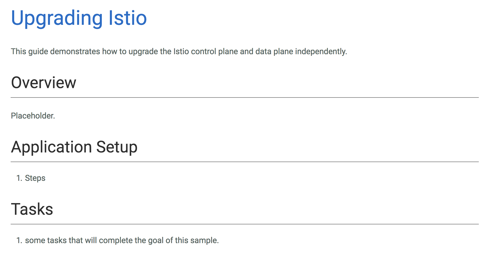

Alex Withrow
awithrow@gmail.com
linkedin
https://github.com/awwithro/istio-linkerd-demo
Removes routing & infrastructure concerns out of application code
“The explicit goal of the service mesh is to move service communication out of the realm of the invisible, implied infrastructure, and into the role of a first-class member of the ecosystem—where it can be monitored, managed and controlled.” – William Morgan
apiVersion: config.istio.io/v1alpha2
kind: RouteRule
metadata:
name: my-rule
spec:
destination:
name: my-service
route:
- labels:
version: v1
weight: 100
/http/1.1/GET => /svc ;
/svc/my-service => /version/my-service/v1 ;
/version => /#/io.l5d.k8s/default/http ;
curl http://my-service/hello-world
/http/1.1/GET => /svc ;
/svc/my-service => /version/my-service/v1 ;
/version => /#/io.l5d.k8s/default/http ;
request interpreted as
/http/1.1/GET/my-service/hello-world
matches
/http/1.1/GET
becomes
/svc/my-service/hello-world
/http/1.1/GET => /svc ;
/svc/my-service => /version/my-service/v1 ;
/version => /#/io.l5d.k8s/default/http ;
-
/svc/my-service/hello-world
matches
/scv/my-service
becomes
/version/my-service/v1/hello-world
/http/1.1/GET => /svc ;
/svc/my-service => /version/my-service/v1 ;
/version => /#/io.l5d.k8s/default/http ;
-
/version/my-service/v1/hello-world
matches
/version
becomes
/#/io.l5d.k8s/default/http/my-service/v1/hello-world
/#/io.l5d.k8s/default/http/my-service/v1/hello-world
This is a lookup in k8s for:
default namespacehttp
my-service servicev1
curl http://my-service/hello-world
becomes
100.10.25.116:80/hello-world
| HTTP | HTTP2/ gRPC | TCP | Thrift | Mux | Websockets | |
|---|---|---|---|---|---|---|
| Istio | ||||||
| Linkerd |
| Kubernetes | Consul | Nomad | Marathon | ZK | |
|---|---|---|---|---|---|
| Istio | |||||
| Linkerd |
| DNS_SRV | Curator | File Based | Eureka | |
|---|---|---|---|---|
| Istio | ||||
| Linkerd |
| Host | Path | Method | Source | Arbitrary Header | |
|---|---|---|---|---|---|
| Istio | |||||
| Linkerd* |
| Prometheus | StatsD | StackDriver | Zipkin | InfluxDB | |
|---|---|---|---|---|---|
| Istio | |||||
| Linkerd |
| mTLS | Fault Injection | Retries | Policy | Egress | |
|---|---|---|---|---|---|
| Istio | |||||
| Linkerd |

source
Basic Service Mesh
Canary Deployment
Errors and Retries
Stealth Deployment